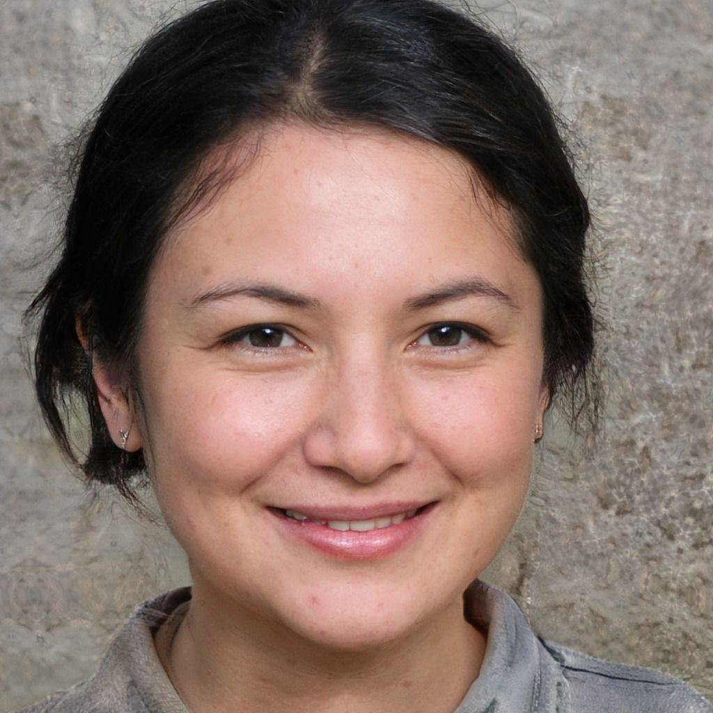
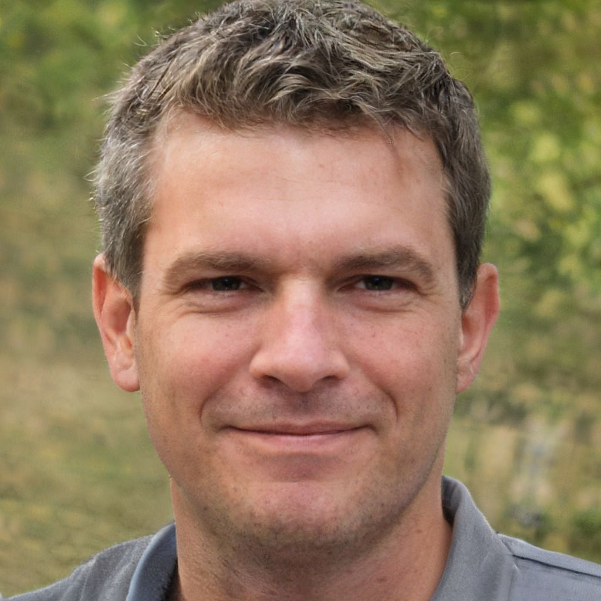
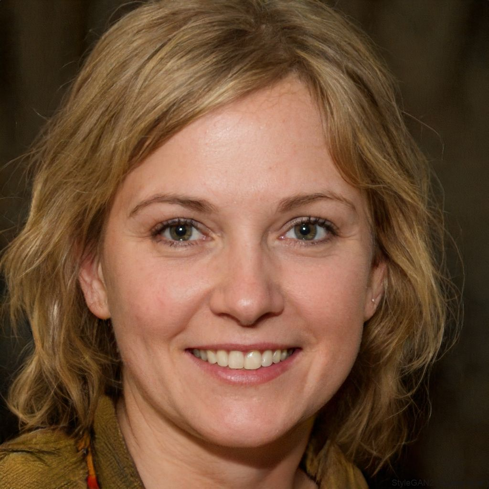

Our Dedicated Instructors & Staff
Behind every great adventure at Lochquarry are our qualified instructors and administrators. Get to know the people committed to your safety, enjoyment, and lifelong outdoor learning.
Claire Jack
Centre Manager
Responsible for the overall running of the centre and all its activities. Claire’s organisational skills keep everything on track, and she never misses a chance to join in a pole climb—her favourite activity.
Robbie Elliot
Senior Instructor (Land)
Oversees all land-based activities from hillwalking to axe throwing. Robbie brings energy and local knowledge to every session and always heads out for a Munro-bagging walk when he’s off duty.
Marion Hunter
Centre Administrator
Manages bookings, schedules, and logistics so that every group has a seamless experience. Marion’s favourite role is making sure everyone has a great time from start to finish.
What Our Guests Say
“I was really scared about the abseiling but the instructor Mike was really encouraging and helped me do it, thanks Mike”
– Sophie, aged 10
Learn about our licensing and safety standards at AALA Licensing – HSE.